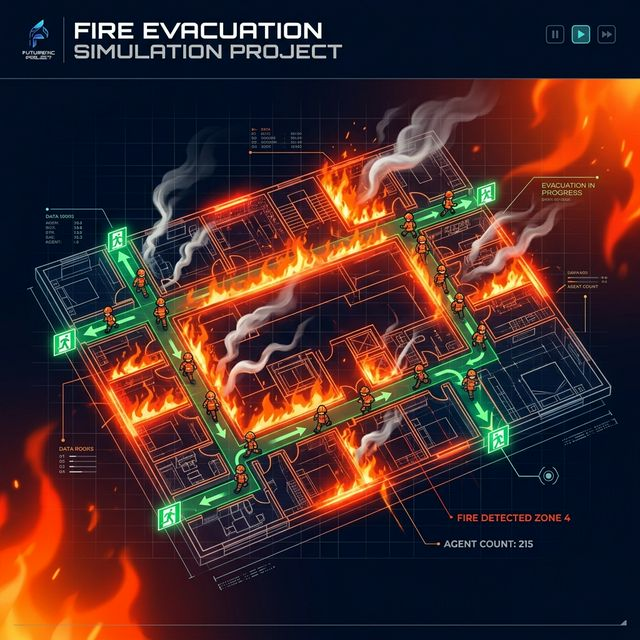

An intelligent Agent-Based Model that simulates human behaviour during building fire emergencies — with live panic dynamics, smoke propagation, and peer collaboration mechanics — all visualised in a real-time web dashboard.

📖 Project Overview
We built a fully interactive, real-time simulation to study how people actually behave during a fire — not just equations, but individual decisions by each person based on their own state of panic, vision, and willingness to help others.
Unlike traditional fire safety models that use averaged crowd equations, every person in our simulation is a unique agent with their own health, speed, vision, nervousness and panic score. Emergent crowd behaviours like bottlenecks and cascading panic arise naturally from the bottom up.
A live Next.js dashboard connected via WebSocket streams every grid state at 10 steps/second. You can watch fire spread, smoke fill corridors, and agents make split-second decisions — all as it happens, with live charts updating in real time.
Each agent runs a full decision cycle: raycasting for vision, map learning, panic scoring via a mathematical formula, and collaboration choices. They can verbally guide others to exits, physically carry incapacitated victims, or provide morale support to reduce panic.
Vision distributions are sampled from WHO global visual impairment data. Alarm belief rates (90% initial believers) reflect real-world fire drills research. Nervousness and experience attributes are distributed to match human population variance.
⚙️ System Design
A two-service architecture connected by a persistent WebSocket, delivering real-time simulation state to the browser at 10 frames per second.
ASCII floorplan files define walls, doors, furniture, and exits in a 50×50 grid parsed by NumPy.
Human agents are spawned with randomly sampled attributes — health, vision, speed, nervousness, and collaboration tendency.
Fire starts probabilistically and spreads to flammable furniture each tick. Smoke fills adjacent cells, reducing vision and health.
Each agent uses Bresenham's raycasting to see through smoke and around walls, learning the environment step by step.
Agents compute their panic score, collaborate with others if safe, then navigate toward exits using shortest-path (NetworkX).
FastAPI broadcasts the full grid state over WebSocket every 100ms. Next.js renders agents as layered images in real time.
🧬 Agent Types
Nine distinct agent types inhabit the simulation, each with different properties, behaviours, and interactions.
Navigates toward exit using shortest path. Has full control of speed and direction.
AlivePanic score ≥ 0.8 — forgets all learned map and moves erratically.
PanicSpeed has dropped to 0 — can only be rescued by a collaborating agent.
IncapacitatedBroadcasts exits verbally, physically carries victims, and calms panicking neighbours.
HelperSpreads to adjacent flammable agents (furniture, dead humans) each tick.
HazardReduces visibility along raycasting paths and drains health at 0.005 per step.
HazardHigh-visibility (range=6) tiles that remove agents from the simulation upon entry.
Safe ZoneFlammable, non-traversable obstacles that serve as fuel for fire propagation.
ObstacleLeft when health = 0. Causes shock in nearby living agents, flammable.
Dead🛠️ Technology Stack
A carefully chosen stack that delivers performance, real-time responsiveness, and clean architecture.
Simulation engine
ABM framework
Async API server
Real-time transport
React front-end
Live chart engine
Pathfinding graphs
Grid computation
Type-safe UI code
🏢 Real-World Applications
FireSim is not just a demo — it is a foundation technology that can be applied across safety-critical industries.
Architects and civil engineers can test evacuation routes before a building is constructed. Simulate how exit placement, corridor width, and door positions affect survival rates under various fire scenarios.
Educational institutions can test their fire drill protocols digitally. Compare different alarm strategies and measure how many students can safely evacuate from crowded lecture halls.
Factories and warehouses with flammable materials can use the system to identify high-risk zones, optimise wardens' routes, and comply with industrial fire safety regulations.
Model evacuations of patients with mobility limitations. The incapacitated agent and physical-carry collaboration mechanic directly reflects the real challenge of non-ambulatory occupants.
Use as a training visualisation tool to show firefighters how fire and smoke spread over time, where victims are likely to be found, and how to prioritise rescue routes.
A ready framework for studying crowd psychology and panic contagion in emergencies. Researchers can modify agent decision formulas, collaboration probabilities, and test new behavioural theories.
🚀 Future Roadmap
The current simulation is the foundation. These are the next phases that will transform FireSim into a professional-grade safety platform.
Train an RL agent to discover the statistically optimal placement of exits and fire wardens for any given floorplan, minimising expected casualties across thousands of simulated fire scenarios.
Connect real IoT smoke sensors and fire alarm systems to the simulation. When a real sensor fires, the corresponding grid cell ignites — turning the simulation into a live, data-driven digital twin of the actual building.
Upgrade the simulation grid to a 3D multi-floor building rendered in Three.js or Unity. First-responders and facility managers can walk through a virtual evacuation in real time using VR headsets.
Automatically run Monte Carlo simulations across hundreds of random scenarios and generate detailed PDF safety reports — showing survival probability curves, bottleneck heatmaps, and collaboration effectiveness scores.
Extend the floorplan system to support stairwells, elevators, and multi-storey buildings. Critical for high-rise office or residential tower safety simulation where vertical evacuation dynamics matter most.
Watch 100 intelligent agents navigate smoke-filled corridors, carry injured colleagues, and race to safety — all in real time on your browser.
👥 Built By
Full-Stack & Simulation
Presented at Innofest 2026 · March 2026
🌍 Social Relevance
Why This Matters
Fire is one of the deadliest preventable emergencies. Technology like this saves lives.
UN SDG 11 — Sustainable Cities
Our project directly supports the United Nations Sustainable Development Goal 11: making cities and human settlements inclusive, safe, resilient, and sustainable. Better fire simulation means better-designed safe buildings for everyone.
Saving Lives Through Preparedness
Approximately 180,000 people die in fire-related incidents globally every year (WHO). Most deaths are preventable with better evacuation planning. FireSim gives safety planners a free, data-driven tool to find weaknesses before a real fire does.
Open-Access Safety Education
By building an open-source, visual, interactive simulation, we democratise access to fire safety research. Schools, NGOs, and under-resourced municipalities can use this system to train without expensive proprietary enterprise software.
Evidence-Based Policy Making
Local governments and fire marshals can use simulation data to create better building codes. Instead of relying on historical fire statistics alone, planners can proactively test proposed building layouts before granting permits.